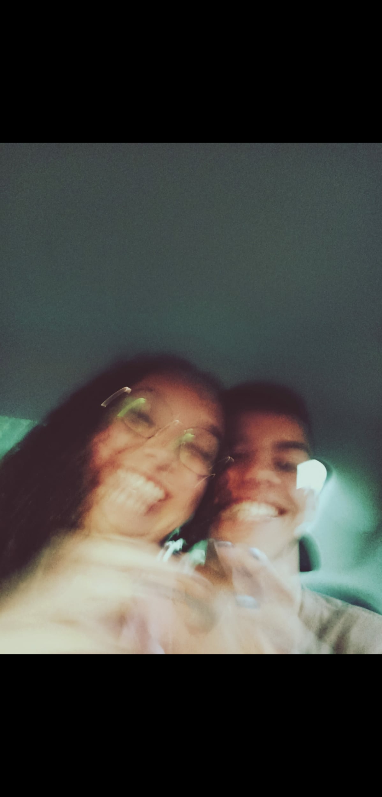
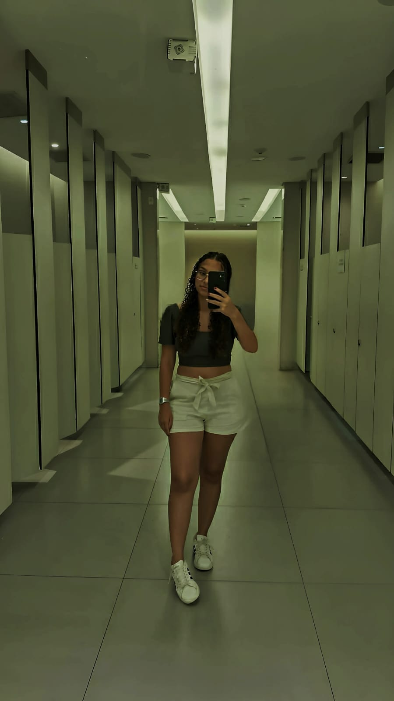
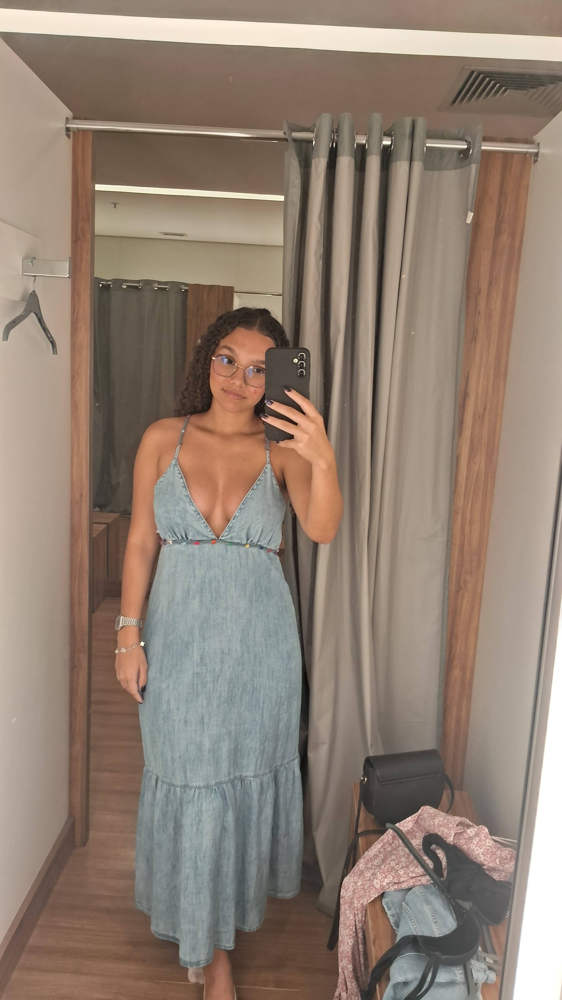
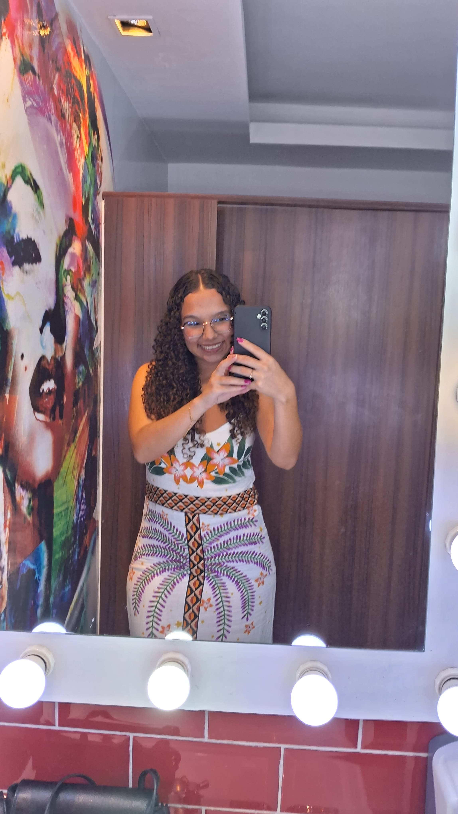
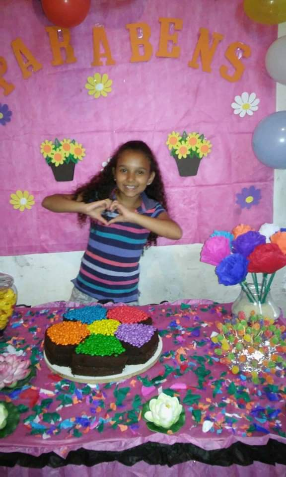
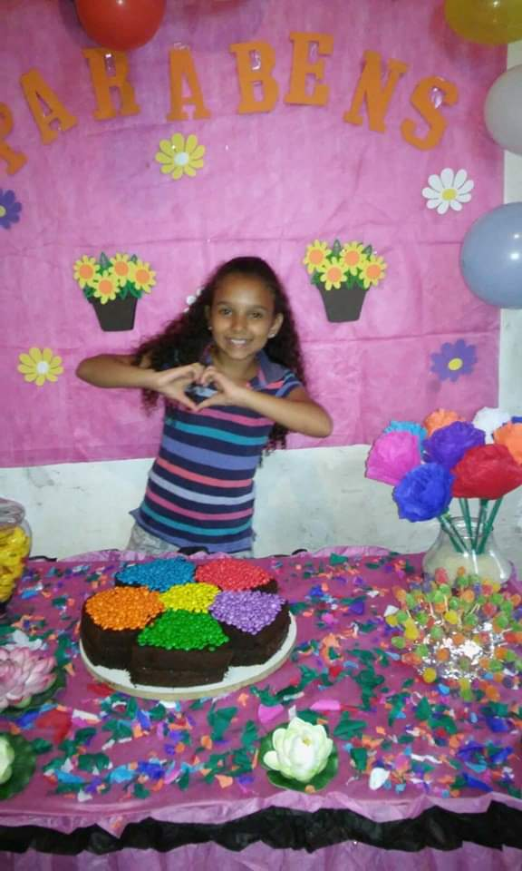
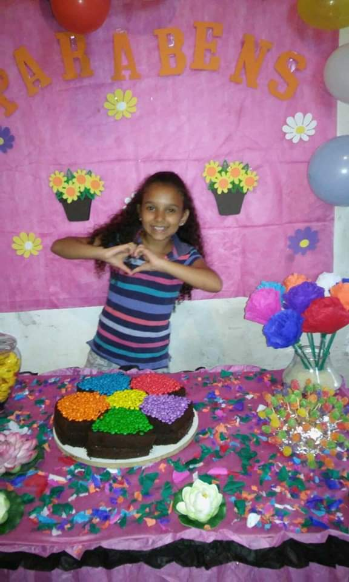

 


O que eu sinto por você é laranja! Laranja não é uma cor simples...
"Gosto de ouvir o som da sua voz, ela parece silenciar todo o barulho que carrego em mim."
Esse tem sido meu lugar favorito, feliz ano novo.
Sempre soube que seria difícil te deixar ir...
Te ver cantando é apaixonante...
Entrar com você em uma loja e ficar 1 hora só reclamando...
"Você me encontrará quando voltar, mesmo que esteja mil anos atrasada."